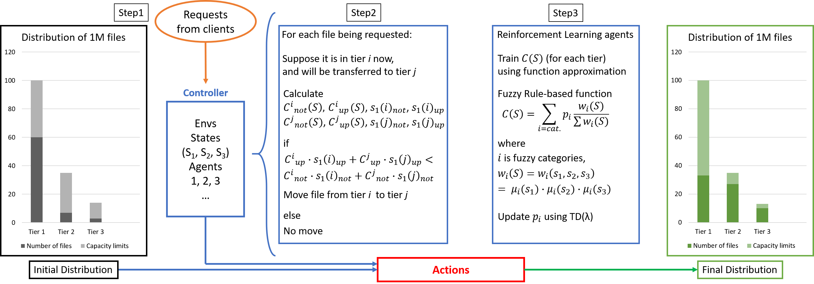
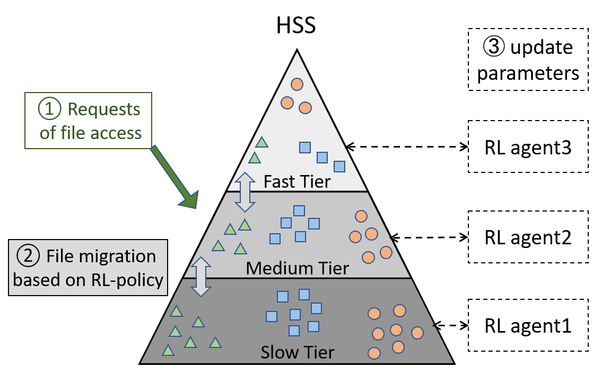
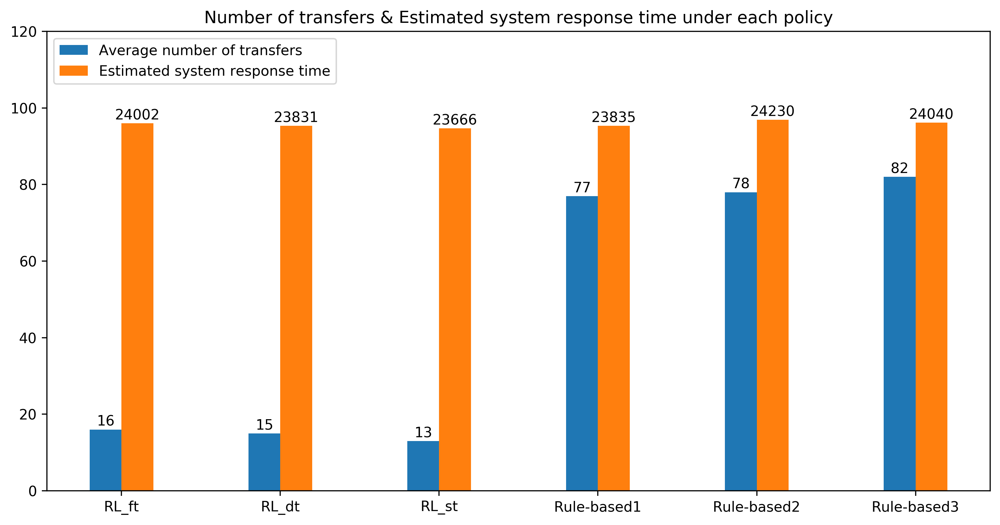
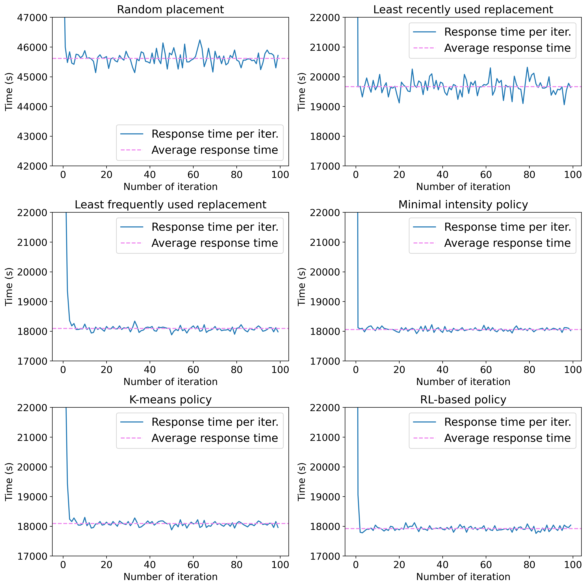

Efficient Hierarchical Storage Management Empowered by Reinforcement Learning.

Hierarchical storage systems (HSS) pool heterogeneous devices—fast but small SSDs, slower HDDs, and large object stores— into one storage hierarchy. The challenge is where to place each file as access patterns change: hot data should live in fast tiers, cold data in cheaper capacity, but naive or static policies waste bandwidth on unnecessary migrations and fail to adapt when workloads shift.
HSM-RL treats file placement as an online control problem. Each tier is associated with an RL agent whose state captures average file temperature, size-weighted temperature, and queueing delay. A fuzzy rule-based function approximates the tier cost, and agents update their parameters with TD(λ) learning. A file is upgraded only when the predicted system response after the move is lower than leaving it in place.
In our TKDE paper we evaluate the policy in both a simulator and a live cloud HSS, showing about 5–6× fewer transfers than rule-based baselines with comparable memory cost. In the later ESWA paper we extend the framework to scientific workloads including microscopy, CFD meshes, 1000 Genomes sequences, and phenotypic screening. By encapsulating dataset-specific interestingness features into the state variables of RL agents, we achieve lower response time than LRU, LFU, k-means, and even prefixed min/max policies.


